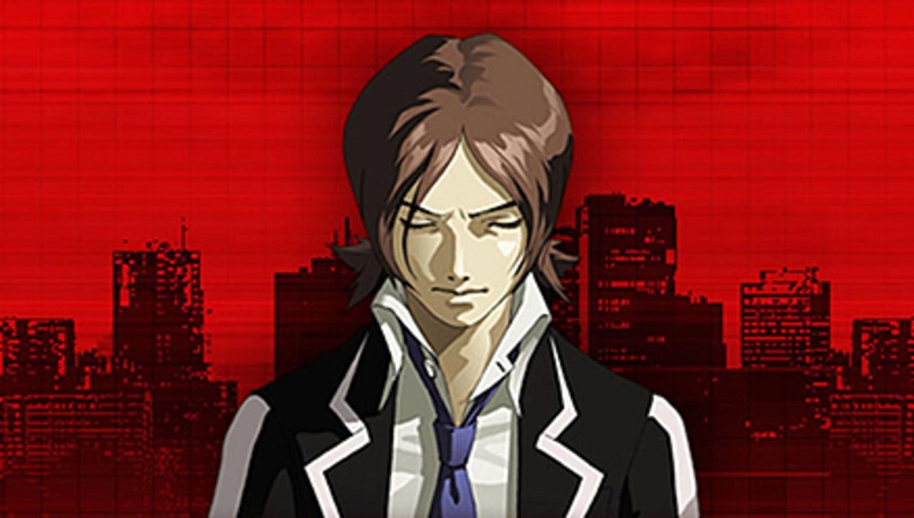
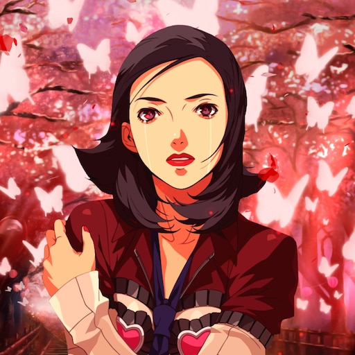
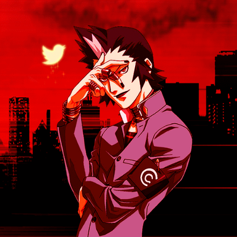
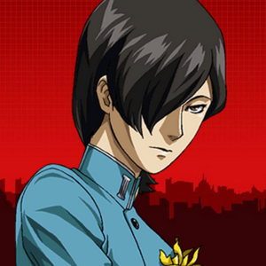
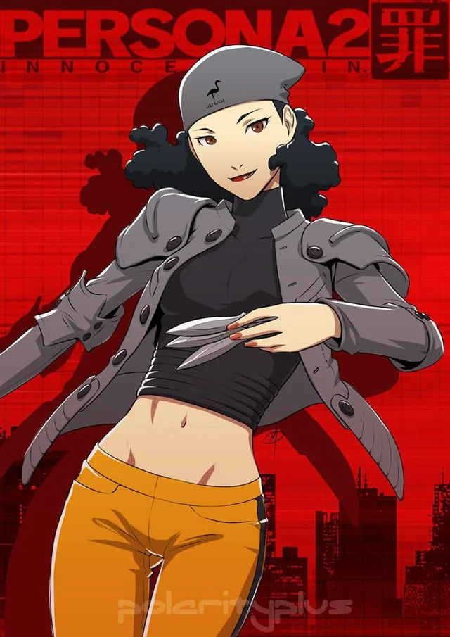
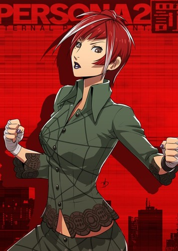
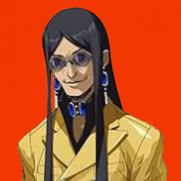
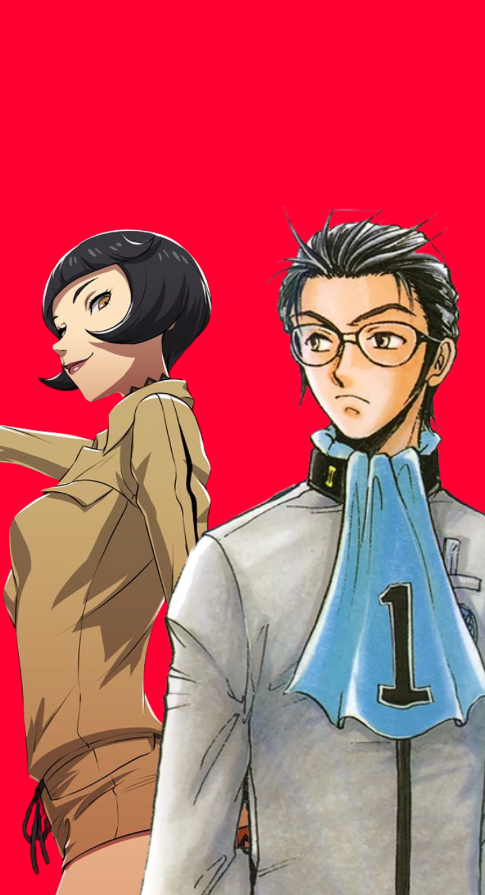

A Dualidade de uma Tragédia (1999 - 2000)
Lançado para o PlayStation original, Persona 2 é uma obra única dividida em duas partes complementares: Innocent Sin (1999) e Eternal Punishment (2000). Juntos, eles formam a narrativa mais madura, complexa e sombria de toda a franquia, explorando as consequências devastadoras de traumas do passado e a fragilidade da realidade.
O jogo se passa na gigantesca metrópole litorânea de Sumaru City. A história desafia os conceitos de destino ao criar duas linhas do tempo distintas, onde os mesmos personagens enfrentam provações psicológicas intensas em lados opostos de um mesmo mistério.
O Fenômeno dos Boatos
Em Sumaru City, algo bizarro começou a acontecer: qualquer boato, mentira ou rumor que se espalhe pela boca do povo torna-se absolutamente real. Desde uma lenda urbana sobre um assassino que realiza desejos até boatos de que uma loja vende armas secretas.
Tudo foge do controle quando um grupo de estudantes invoca o "Joker Game", um mistério onde ligar para o próprio celular faz uma entidade chamada Joker aparecer. Aqueles que não revelam seu desejo ao Joker têm suas energias ideais roubadas, transformando-se em cascas vazias e iniciando uma conspiração que envolve cultos apocalípticos.
Pilares do Jogo
Sistema de Rumores
A grande mecânica do jogo: você pode coletar boatos conversando com civis nas ruas e pagar a uma agência de detetives para espalhá-los. Isso altera o mundo, abrindo dungeons secretas ou mudando os itens das lojas.
Contatos e Fusão Fusion Spells
O sistema de negociação voltou expandido! Até três personagens podem conversar juntos com um demônio de uma vez. Além disso, usar Personas com elementos certos na ordem correta desbloqueia magias combinadas devastadoras.
Exploração Isométrica
Abandonando a perspectiva em primeira pessoa do primeiro jogo nas dungeons, Persona 2 adotou uma câmera isométrica em 3D clássica para a exploração de mapas e ambientes urbanos.
Personagens - Innocent Sin (A Linha do Tempo Original)

Tatsuya Suou
O protagonista silencioso de Innocent Sin. Aluno da Seven Sisters High School,
é um lobo solitário conhecido pela sua mania de imitar o som de um isqueiro Zippo.
Sua Persona inicial é Vulcanus.

Maya Amano
Uma repórter alegre e otimista que trabalha para a revista de fofocas infantis Coolest.
O seu lema de vida é "Let's think positive!" (Vamos pensar positivo!).
Sua Persona inicial é Maia.
Lisa Silverman (Ginko)
Uma estudante caucasiana filha de pais americanos que se naturalizaram japoneses.
É fascinada por artes marciais e secretamente apaixonada por Tatsuya.
Sua Persona inicial é Eros.

Eikichi Mishina (Michel)
Líder de uma gangue escolar e vocalista de uma banda de Visual Kei.
Extremamente narcisista e dramático, autointitula-se "Michel", mas vive a discutir com a Lisa.
Sua Persona inicial é Rhadamanthus.

Jun Kurosu
Um amigo de infância muito próximo de Tatsuya.
Marcado por uma tragédia do passado, ele é manipulado para se tornar o vilão misterioso conhecido como
Joker, antes de se juntar ao grupo.
Sua Persona é Hermes.

Yukino Mayuzumi
Retornando diretamente de Persona 1, Yukino agora é uma jovem adulta madura.
Ela atua como fotógrafa e mentora de Maya Amano, unindo-se ao grupo escolar para defendê-los do Joker.
Sua Persona é Vesta.
Personagens - Eternal Punishment (A Outra Realidade)
Maya Amano (Protagonista)
Nesta realidade paralela, Maya assume o papel de protagonista silenciosa. Ela investiga a onda de assassinatos do "Joker" enquanto sente um forte sentimento de Déjà vu em relação a pessoas que nunca conheceu.

Ulala Serizawa
A colega de quarto e melhor amiga de Maya. Trabalha com cosméticos e tem azar no amor,
sendo enganada constantemente em encontros às cegas.
Luta boxe usando a sua Persona inicial Callisto.
Katsuya Suou
Irmão mais velho de Tatsuya e sargento da polícia de Sumaru City.
É extremamente sério, rígido e obcecado pela lei e pela ordem, mas preocupa-se profundamente com o irmão.
Sua Persona é Hyperion.

Baofu
Um ex-promotor de justiça cínico que finge ser apenas um informante e hacker clandestino.
Ele quer derrubar a máfia de Taiwan por vingança e opera nas sombras do submundo.
Sua Persona é Odysseus.
Tatsuya Suou (Aliado)
Desta vez, ele não é o protagonista,
mas sim um aliado jogável misterioso que retém todas as memórias da linha do tempo passada.
Ele tenta afastar Maya do perigo para protegê-la.
Sua Persona é Nova Kaiser.

Eriko Kirishima / Kei Nanjo
Dependendo da rota escolhida pelo jogador em Eternal Punishment, o herdeiro bilionário Nanjo ou a modelo e especialista em ocultismo Elly se juntam permanentemente ao grupo para investigar a Nova Ordem Mundial.
Guia de Plataformas
PlayStation (1999 - 2000)
A estreia da duologia. Curiosamente, apenas Eternal Punishment foi localizado para o ocidente na época, deixando os fãs americanos sem a primeira metade da história (Innocent Sin) devido a temas sensíveis e polêmicos no enredo.
PlayStation Portable (2011 - 2012)
A Atlus lançou remakes fantásticos para o PSP. Desta vez, o ocidente recebeu oficialmente o Innocent Sin, mas o remake de Eternal Punishment ficou restrito ao Japão, mantendo a clássica "maldição" de divisão ocidental do jogo.